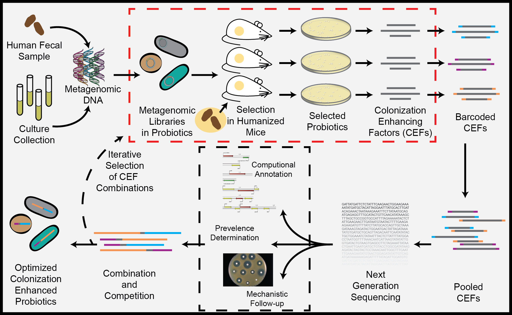

Research.
Establishment and Dynamics of Very Low Birthweight Infant Gut Microbiota Development.
Antibiotic use is nearly universal in pre-term infants, whose guts are colonized by as few as 20 bacterial species in the first weeks of life. Abnormal patterns of intestinal colonization have been associated with increased incidence of necrotizing enterocolitis (NEC) and late-onset sepsis, which combined account for over half of all mortality outside the first two weeks of life in pre-term infants. It is therefore essential to understand and quantify the impact of antibiotic treatment on the assembly and dynamics of low-diversity gut microbiota community and resistome in this population. We are studying the development and establishment of the gut microbiota and resistome in this population in Saint Louis Children's Hostpital in Saint Louis:

Identify fitness-enhancing factors enabling improved integration of exogenous microbes in established gut microbiota.
Clinical trials of probiotics have demonstrated positive outcomes when administered continuously, however after treatment is terminated, probiotics are cleared from the gut microbiota in less than three weeks in the majority of patients. The established adult microbiota excludes news species through a variety of mechanisms, and has therefore limited probiotic efficacy to short-term use and reduced their ability to treat chronic gastrointestinal diseases. We aim to engineer enhanced probiotics capable of colonizing the adult gut microbiota by using in-vivo functional metagenomics to identify genes that allow probiotic species to persist in the gut microbiota.
Related publications:
Gibson MK*, Pesesky MW*, Dantas G. The Yin and Yang of Bacterial Resilience in the Human Gut Microbiota. J. Mol. Biol. 2014; DOI: 10.1016/j.jmb.2014.05.029
Improved Annotation of Antibiotic Resistance.
Previous work has identified antibiotic resistance genes with as low as 30% amino acid identity to any known resistance gene, demonstrating a need for identification of remote homologs, however, single coding mutations in a resistance gene can also have functional consequences. Taken together, computational annotation of antibiotic resistance is an enormous challenge and current annotation methods lack the specificity and sensitivity to accurately achieve functional annotation of this class of genes. I am interested in developing annotation methods capable of acurately classifying this extremely important class of genes. Recently, we published our antibiotic resistasnce profile hidden Markov model database, Resfams:
Related publications:
Gibson MK, Forsberg KJ, Dantas G. Improved annotation of antibiotic resistance determinants reveals resistomes cluster by ecology. The ISME Journal. 2014; 10.1038/ismej.2014.106.